CLOUDSINEAI ·
SECURITY OBSERVABILITY FOR AGENTIC AI
The governance gap
98%
of enterprises deploying agentic AI have no formal security governance.
CLOUDSINEAI · AGENT SECURITY INDEX 2026
The reality
Autonomous agents.
Opaque behaviour.
No audit trail. No kill switch. 69% run with zero monitoring.
Introducing TraceCtrl
Security observability
and
control for agentic AI.
Pillar 01
Trace
Every agent action, tool call, and data access — in real time.
OTEL-NATIVE TELEMETRY
ZERO CODE CHANGES
IMMUTABLE AUDIT LOGS
Pillar 02
Control
Map attack paths before adversaries do. Enforce policy at runtime.
TAGAAI ATTACK GRAPHS
RUNTIME GUARDRAILS
COMPLIANCE ATTESTATION
Trace Agents.
Control Risk.
tracectrl.ai